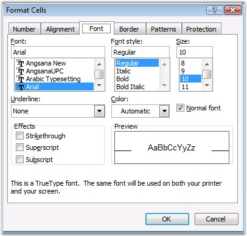
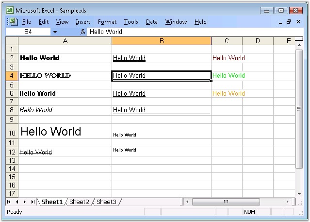

MS Excel provides support to customize the font settings through the Format Cells dialog box. Font tab in the format dialog box provides options to set the font name, size, color, and so on.

Figure 34: Font settings in MS Excel
Font Settings in XlsIO
XlsIO also has API support for specifying the font style for the text in the cells. CellStyle property exposes various font settings which is illustrated in the following code.
|
[C#]
// Setting Font Type. sheet.Range["A2"].CellStyle.Font.FontName = "Arial Black"; sheet.Range["A4"].CellStyle.Font.FontName = "Castellar";
// Setting Font Styles. sheet.Range["A6"].CellStyle.Font.Bold = true; sheet.Range["A8"].CellStyle.Font.Italic = true;
// Setting Font Size. sheet.Range[ "A10" ].CellStyle.Font.Size = 18;
// Setting Font Effects. sheet.Range["A12"].CellStyle.Font.Strikethrough = true; sheet.Range["B10"].CellStyle.Font.Subscript = true; sheet.Range["B12"].CellStyle.Font.Superscript = true;
// Setting UnderLine Types. sheet.Range["B2"].CellStyle.Font.Underline = ExcelUnderline.Double; sheet.Range["B4"].CellStyle.Font.Underline = ExcelUnderline.DoubleAccounting; sheet.Range["B6"].CellStyle.Font.Underline = ExcelUnderline.Single; sheet.Range["B8"].CellStyle.Font.Underline = ExcelUnderline.SingleAccounting;
// Setting Font Color. sheet.Range["C2"].CellStyle.Font.Color = ExcelKnownColors.Lavender; sheet.Range["C4"].CellStyle.Font.Color = ExcelKnownColors.Light_blue; sheet.Range["C6"].CellStyle.Font.Color = ExcelKnownColors.Indigo; |
|
[VB.NET]
' Setting Font Type. sheet.Range("A2").CellStyle.Font.FontName = "Arial Black" sheet.Range("A4").CellStyle.Font.FontName = "Castellar"
' Setting Font Styles. sheet.Range("A6").CellStyle.Font.Bold = True sheet.Range("A8").CellStyle.Font.Italic = True
' Setting Font Size. sheet.Range("A10").CellStyle.Font.Size = 18
' Setting Font Effects. sheet.Range("A12").CellStyle.Font.Strikethrough = True sheet.Range("B10").CellStyle.Font.Subscript = True sheet.Range("B12").CellStyle.Font.Superscript = True
' Setting UnderLine Types. sheet.Range("B2").CellStyle.Font.Underline = ExcelUnderline.Double sheet.Range("B4").CellStyle.Font.Underline = ExcelUnderline.DoubleAccounting sheet.Range("B6").CellStyle.Font.Underline = ExcelUnderline.Single sheet.Range("B8").CellStyle.Font.Underline = ExcelUnderline.SingleAccounting
' Setting Font Color. sheet.Range("C2").CellStyle.Font.Color = ExcelKnownColors.Lavender sheet.Range("C4").CellStyle.Font.Color = ExcelKnownColors.Light_blue sheet.Range("C6").CellStyle.Font.Color = ExcelKnownColors.Indigo |
Editing Rich Text
XlsIO provides support for reading and writing rich text by using the IRichTextString interface. It enables to format each character in the cell with different font styles.
 Note: Currently XlsIO cannot write formatted rich
text.
Note: Currently XlsIO cannot write formatted rich
text.
|
[C#]
// Insert Rich Text. IRange range = sheet.Range["A1"]; range.Text = "RichText"; IRichTextString rtf = range.RichText;
// Formatting first 4 characters. IFont redFont = workbook.CreateFont(); redFont.Bold = true; redFont.Italic = true; redFont.RGBColor = Color.Red; rtf.SetFont(0, 3, redFont);
// Formatting last 4 characters. IFont blueFont = workbook.CreateFont(); blueFont.Bold = true; blueFont.Italic = true; blueFont.RGBColor= Color.Blue; rtf.SetFont(4, 7, blueFont); |
|
[VB.NET]
' Insert Rich Text. Dim range As IRange = sheet.Range("A1") range.Text = "RichText" Dim rtf As IRichTextString = range.RichText
' Formatting first 4 characters. Dim redFont As IFont = workbook.CreateFont() redFont.Bold = True redFont.Italic = True redFont.RGBColor = Color.Red rtf.SetFont(0, 3, redFont)
' Formatting last 4 characters. Dim blueFont As IFont = workbook.CreateFont() blueFont.Bold = True blueFont.Italic = True blueFont.RGBColor = Color.Blue rtf.SetFont(4, 7, blueFont) |

Figure 35: XlsIO with Font Settings